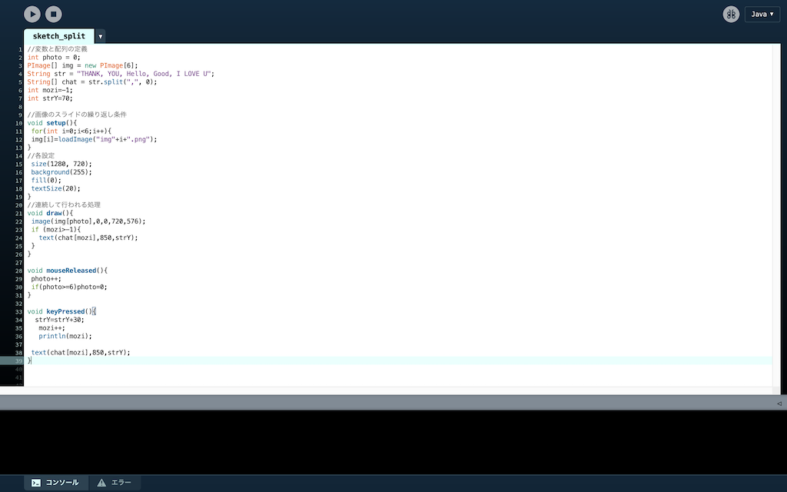
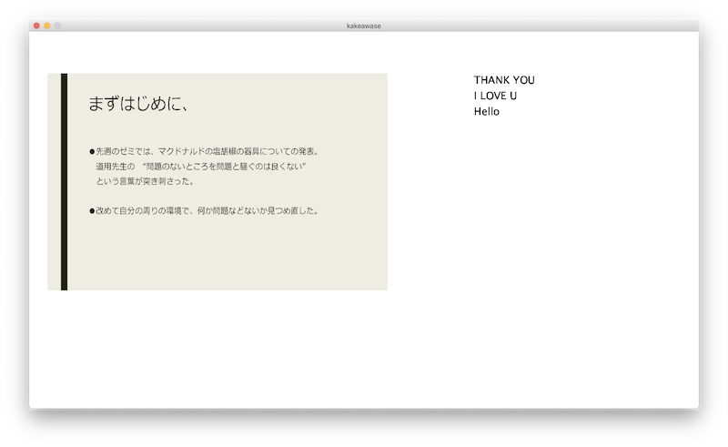

決定(Enter)を押してもただ打った文字が削除されるだけの命令です。
信頼と実績のログイン画面


Tkinterを用いてGUIを配置してログイン画面を作成しました。
決定(Enter)を押してもただ打った文字が削除されるだけの命令です。
信頼と実績のログイン画面
Processingにて大まかな形を作成しました。
マウスクリックでスライドの移動、キークリックで文字の表示ができます。
pdeファイルをdownload

